| 1:00 | 1:30 | 2:00 | 2:30 | 3:00 | 3:30 | 4:00 | 4:30 | 5:00 | 5:30 | 6:00 | 6:30 | 7:00 | 7:30 | 8:00 | 8:30 | 9:00 | 9:30 | 10:00 | 10:30 | 11:00 | 11:30 | 12:00 | 12:30 | ||
|---|---|---|---|---|---|---|---|---|---|---|---|---|---|---|---|---|---|---|---|---|---|---|---|---|---|
| 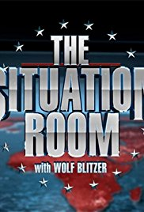The Situation Room | The News Room | Anderson Cooper 360 | 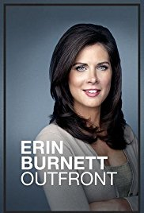Erin Burnett OutFront | State of the Union with Candy Crowley | United Shades of America | Early Start | |||||||||||||||||||
| KC Undercover |  Girl Meets World Girl Meets World |
 Stuck in The Middle Stuck in The Middle |
BizaardBark | Liv and Maddie | Jeesie | Good Luck Charlie | 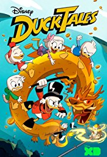Ducktales | Andi Mack |  Cars 3 Cars 3 |
Odd Life Of Timothy Green. | 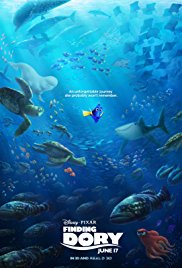Finding Dory | ||||||||||||||
| 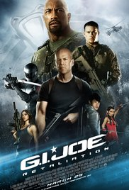G.I. Joe Retaliation | 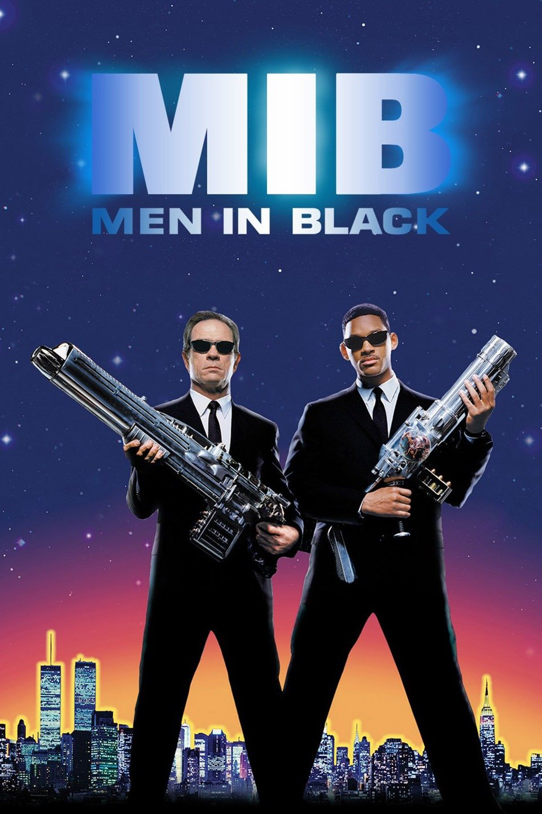Men in Black | The Twilight Zone | 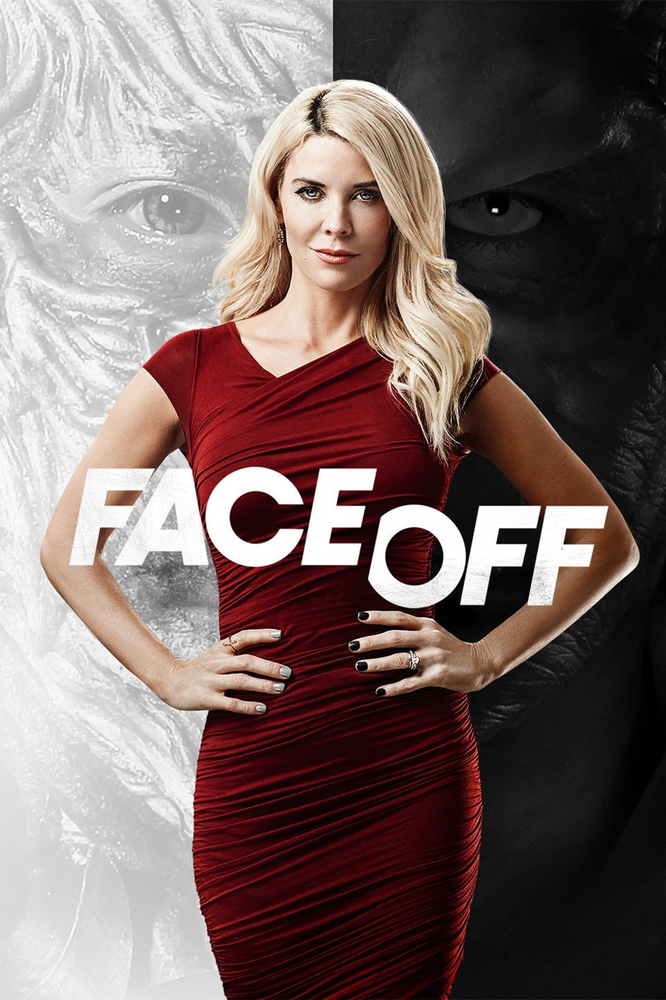 Face Off | 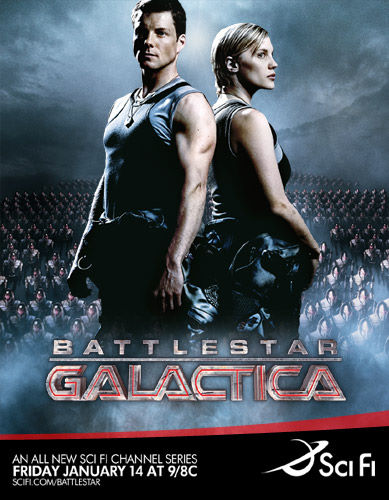Battle Star Galactica | 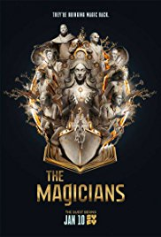The Magicians | 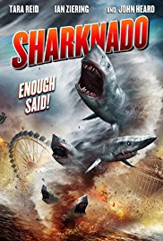Sharknado | |||||||||||||||||||
| 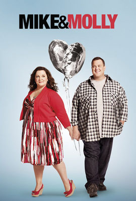Mike and Molly | The Perfect Guy | POSE | 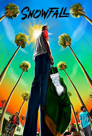Snowfall | Furious 7 | Taken 3 | 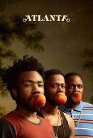Atlanta | 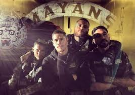Mayans MC | Better Things | Minions | Ted2 | |||||||||||||||
| The Middle | Famous in Love | Bring it On | Reba | Siren | Grown Ups | 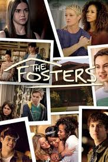The Fosters | Switched At Birth | Shadow Hunters | |||||||||||||||||